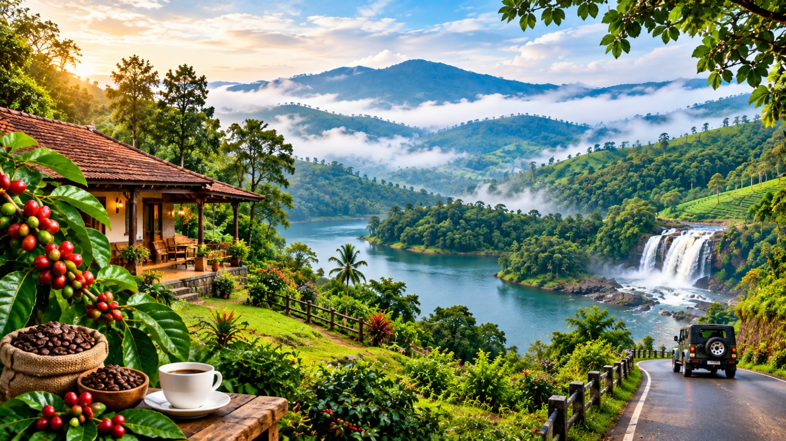
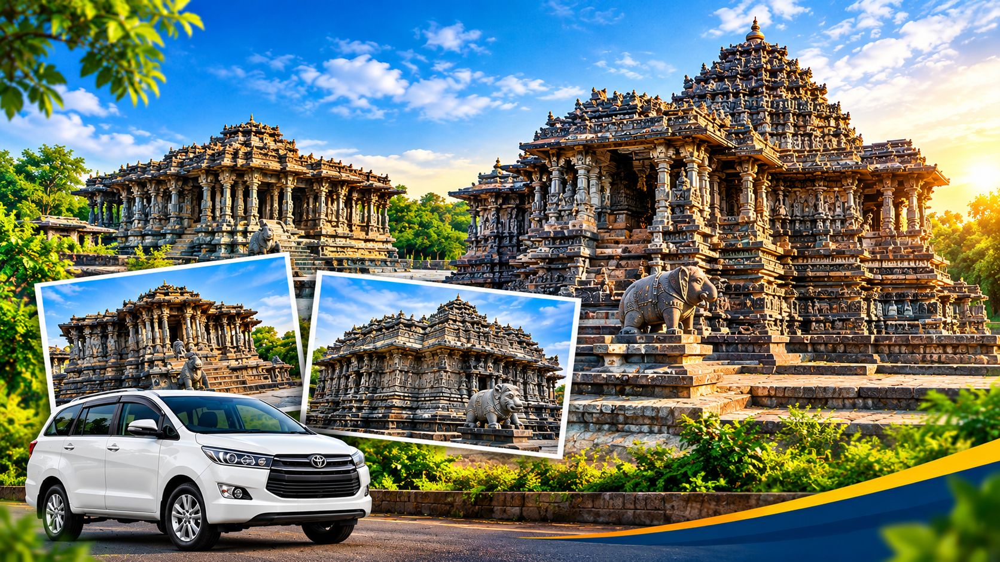

Discover places.
Plan better journeys.
Explore travel guides from Mangalore with destination ideas, temple visits, scenic hill stations, family road trips and practical travel tips for discovering Karnataka and nearby destinations.
Travel guides for
your next adventure.
Choose a guide to learn more about destinations, places to visit, travel planning and sightseeing options for journeys starting from Mangalore.

Best Places to Visit in Mangalore
Discover popular attractions around Mangalore, including coastal scenery, city landmarks, cultural spots and places to include in a local sightseeing trip.

Mangalore to Udupi Travel Guide
Plan a journey to Udupi with ideas for temple visits, local attractions, food stops and places to explore during your coastal Karnataka trip.

Best Temples Near Mangalore
Explore well-known temples near Mangalore and get ideas for planning a comfortable pilgrimage with family or friends.

Mangalore to Dharmasthala Travel Guide
Prepare for a pilgrimage to Dharmasthala with destination information, travel planning suggestions and ideas for nearby places to visit.

Best Places to Visit in Coastal Karnataka
Discover coastal destinations, beaches, temples, heritage attractions and places to include in a trip through the Karnataka coast.

Mangalore to Coorg: A Family Trip Guide
Find ideas for a family journey to Coorg, including scenic surroundings, sightseeing possibilities and helpful itinerary planning tips.
Mangalore Airport Taxi Booking Guide
Learn how to prepare for airport pickup or drop, share flight details and select a vehicle that suits your passengers and luggage.

Best Hill Stations Near Mangalore
Get inspiration for scenic drives, cool mountain destinations, nature escapes and hill station holidays from the Mangalore region.

Belur and Halebidu Heritage Travel Guide
Explore remarkable Hoysala temple architecture and plan a heritage-focused visit to Belur and Halebidu from Mangalore.
Best Family Road Trips from Mangalore
Find ideas for family-friendly journeys, sightseeing stops and multi-day holidays starting from Mangalore and coastal Karnataka.
Planning your next journey?
Contact Radhakrishna Taxi Service for taxi bookings from Mangalore, airport transfers, family travel and Karnataka tour packages.